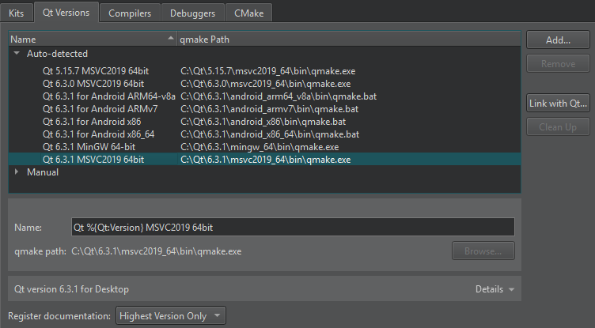

Add Qt versions
You can install multiple versions of Qt on the development PC and use them to build your projects. For example, device manufacturers offer special Qt versions for developing applications for their devices.
To view the installed Qt versions, select Preferences > Kits > Qt Versions.

To view detailed information about each Qt version, select it in the list and select Details in the Qt version for section.
To remove invalid Qt versions, select Clean Up.
Register installed Qt versions
You can link to a Qt that Qt Online Installer installed to automatically detect the installed Qt versions. However, you cannot link to a Qt that the system installed with some other package manager, such as your Linux distribution, brew on macOS, or Chocolatey on Windows, nor a self-built Qt. In those cases, select Add in the Qt Versions tab to add the Qt version manually, as instructed in Set up new Qt versions.
To link to a Qt installation:
- Select Preferences > Kits > Qt Versions > Link with Qt.
- In the Qt installation path field, enter the path to the directory where you installed Qt.
- Select Link with Qt to automatically register Qt versions and kits in the Qt installation directory.
- Select Restart Now to restart Qt Creator.
To remove the automatically detected Qt versions from the list, select Remove Link.
If the Qt Versions tab does not show a Qt version under Auto-detected, set it up manually.
You specify the Qt version to use for each kit for building and running your projects in Preferences > Kits.
Set up new Qt versions
To add a Qt version:
- Select Preferences > Kits > Qt Versions > Add.
- Select the qmake executable for the Qt version to add.
- Select the Qt version to view and edit it.
- In the Name field, edit the name that Qt Creator suggests for the Qt version.
- In the qmake path field, you can change the qmake location.
- If the Qt version is for QNX, enter the path to the QNX SDK in the QNX SDK field.
To remove a Qt version that you added manually, select it in the Manual list and then select Remove.
Register documentation
By default, Qt Creator registers only the latest available version of the documentation for each installed Qt module.
To register the documentation sets of all installed Qt versions, choose All from the Register documentation list. To register no Qt documentation at all, choose None. The default behavior is Highest Version Only.
Troubleshoot Qt installations
If Qt Creator detects problems in the installation of a Qt version, it displays warnings and errors beside the name of the Qt version in the list. Select the Qt version to see more information about the issue and suggestions for fixing it.
To verify the installation of a particular Qt version, Qt Creator calls qmake -query and checks that the directories referenced in the output exist. When Qt Creator complains about the installation of a self-built Qt version, try running make install in the build directory to actually install Qt into the configured location. If you installed Qt using the Qt Installer, run Qt Maintenance Tool to check for updates or to reinstall the Qt version.
Minimum requirements
If your build of Qt is incomplete but you still want to use qmake as build system, you need to ensure the following minimum requirements to use that setup with Qt Creator.
- qmake is an executable that understands the
-querycommand-line argument. - The
binandincludedirectories have to exist. Qt Creator fetches these directories by runningqmake -query. - The
mkspecsdirectory should be complete enough to parse .pro files.
If your Qt version has no libQtCore.so, Qt Creator cannot detect the ABI.
See also Kits.